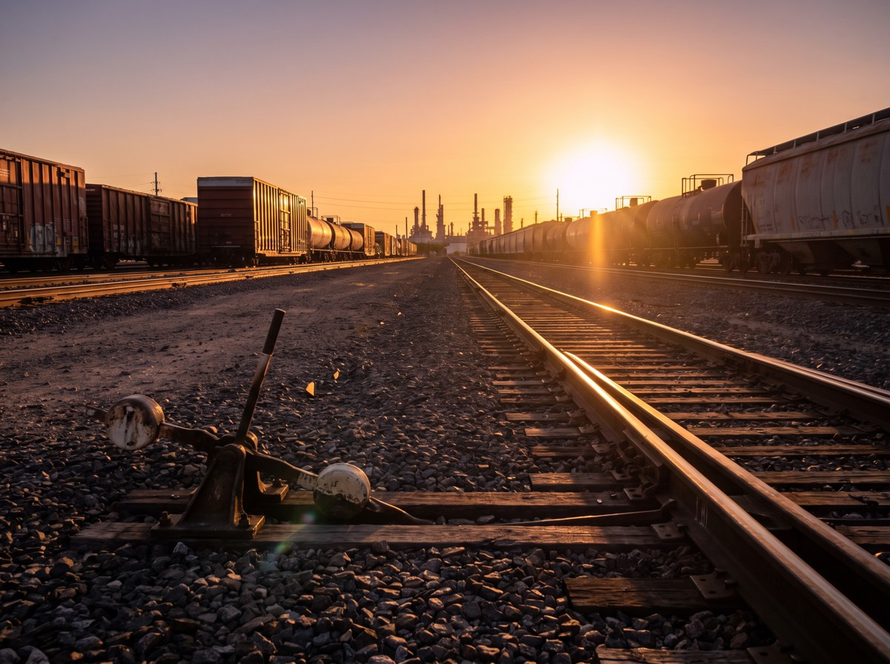

Home Yard · Operated

La Porte — Houston Ship Channel
La Porte, Texas · Harris County
Our home base, positioned on the Houston Ship Channel inside the largest refining and petrochemical complex in North America. Rail, water, and highway meet here — which is exactly why the cars stack up when a yard is run badly, and why we run ours the way we do.
MarketHouston Ship Channel
Modal accessRail · Truck · Barge
ServicesFull scope
Dispatch24 / 7